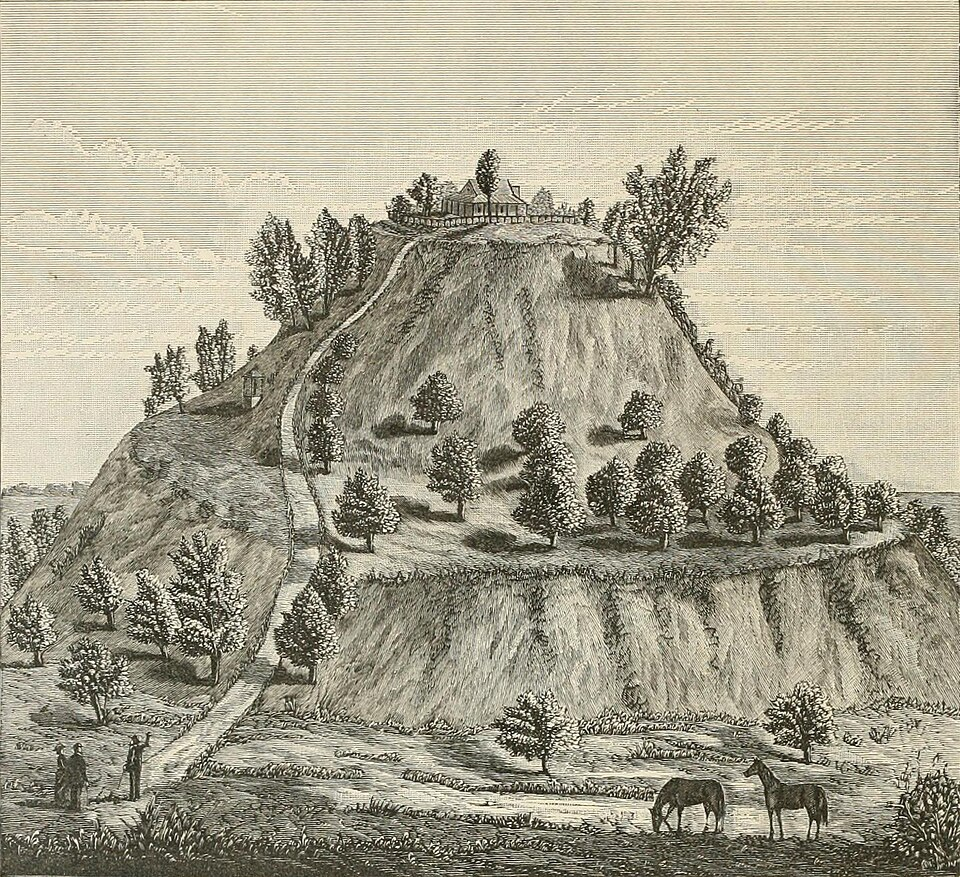
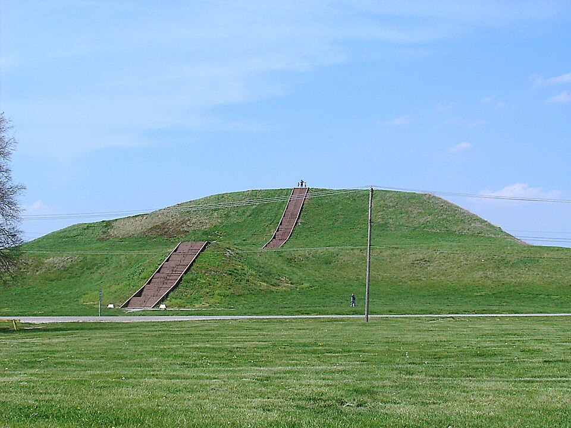
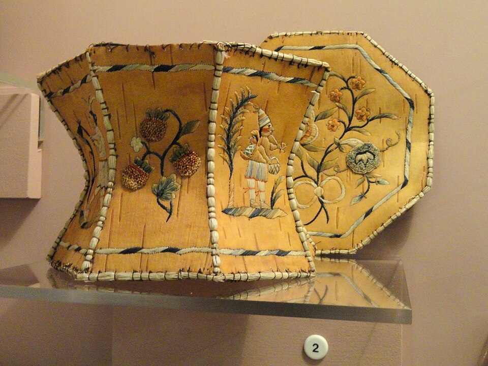

Primary Sources
As you read each source, practice these four skills:
The Haudenosaunee (Iroquois) Confederacy is one of the oldest democracies in the world. Their creation story explains how the world was formed on the back of a great turtle — which is why some Indigenous peoples call North America "Turtle Island." This version was recorded by Haudenosaunee people in the early 1900s, but the story is thousands of years old.
In the beginning, there was no earth, only water and sky. In the Sky World above, a great tree stood at the center. Sky Woman fell through a hole near the great tree. The birds saw her falling and flew up to catch her, spreading their wings to slow her descent. The great sea turtle rose from the waters and offered his back as a resting place. The animals dove deep into the water, searching for earth. The muskrat finally brought up a small handful of mud and placed it on the turtle's back. Sky Woman walked in a circle on the turtle's shell, and as she walked, the earth grew and grew — and that is how the world began.
How does this source challenge or support the idea that Indigenous peoples had complex belief systems before European contact?
Hewitt, J.N.B. "Iroquoian Cosmology." Twenty-First Annual Report of the Bureau of American Ethnology. Government Printing Office, 1903.
Cahokia, located near present-day St. Louis, Missouri, was the largest city in North America before European contact. At its peak around 1100 CE, it had a population of 10,000–20,000 people — larger than London at the same time. Its central feature was Monks Mound, a massive earthen pyramid covering 14 acres at its base, larger than the Great Pyramid of Egypt in footprint. Below are two views of the mound: an engraving published in 1882, and a photograph taken in 2007. Both were made centuries after Cahokia was abandoned.

Monks Mound, Cahokia, Illinois. Engraving published in History of Madison County, Illinois (W. R. Brink & Co., 1882). Source: Wikimedia Commons (public domain).

Monks Mound today. The largest pre-Columbian earthwork in the Americas. Photo: Skubasteve834, 2007, via Wikimedia Commons (CC BY-SA 3.0).
The textbook says Indigenous societies were "sophisticated civilizations." Do these images support that claim? Where do the 1882 engraving and the modern photograph agree — and where do they differ? What additional evidence would you want?
"Monks Mound." Engraving in History of Madison County, Illinois. W. R. Brink & Co., 1882. Photograph by Skubasteve834, 2007 (CC BY-SA 3.0). Both via Wikimedia Commons.
View the original engraving → View the original photograph →
When Spanish conquistadors first saw the Aztec capital of Tenochtitlán in 1519, they couldn't believe their eyes. Bernal Díaz del Castillo was a soldier who was there. He wrote this description decades later, still amazed by what he had seen. Tenochtitlán had a population of over 200,000 — five times larger than London at the time.
We were amazed and said that it was like the enchantments they tell of in the legend of Amadís, on account of the great towers and buildings rising from the water, and all built of stone. And some of our soldiers even asked whether the things that we saw were not a dream… I do not know how to describe it, seeing things as we did that had never been heard of or seen before, not even dreamed about… When we entered the great market place, the multitude of people and the quantities of merchandise amazed us. The noise and hum of voices could have been heard more than a league off.
How does Díaz's description support or complicate the chapter's argument about Indigenous civilizations?
Díaz del Castillo, Bernal. The True History of the Conquest of New Spain. 1568. Translated by Alfred Percival Maudslay, Hakluyt Society, 1908.
Indigenous peoples of the Great Lakes and Northeast have worked with birch bark for thousands of years, shaping it into canoes, containers, and shelter coverings. Birch bark is waterproof, lightweight, and flexible — a brilliant engineering choice. These decorated boxes were made by an Ojibwe artist sometime after 1865. The boxes are much newer than Cahokia or Tenochtitlán, but the techniques behind them are ancient — a living technology passed down and adapted across many generations, including after European contact.

Birch bark boxes, probably southeastern Ojibwe, made after 1865. Peabody Museum of Archaeology and Ethnology, Harvard University. Photo: Daderot, via Wikimedia Commons (CC0).
What does this artifact tell us about Indigenous technology and artistry that written sources might miss?
Box (birch bark), probably southeastern Ojibwe, post-1865. Peabody Museum of Archaeology and Ethnology, Harvard University.